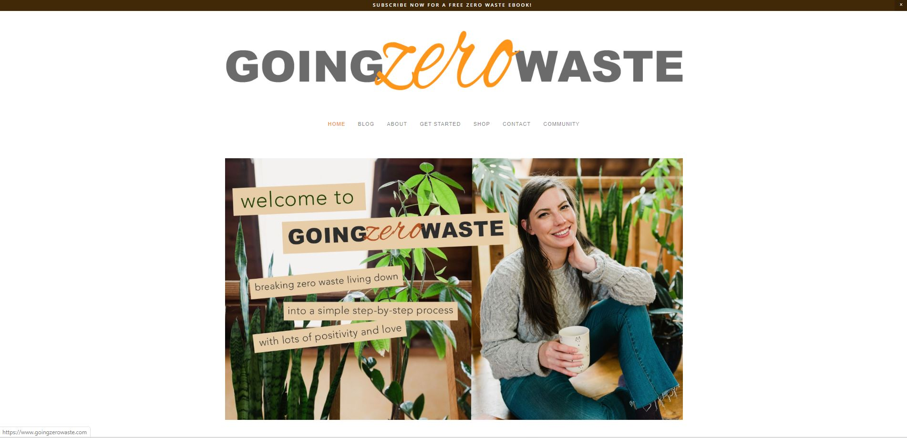
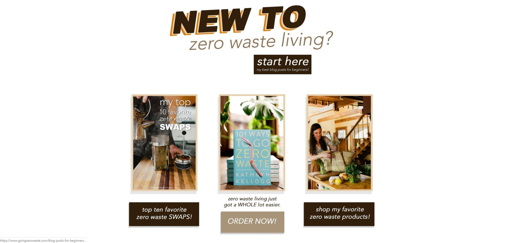
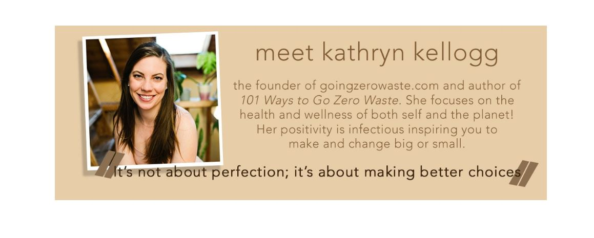

Website Beauty Pagent
A beautiful website is not only pleasing to the eye, but also easy to navigate and easy to understand as whole. Often, we take for granted well designed website until stumbling upon a poorly designed one -- including ease of navigation! One of my biggest pet peeves is a website that is difficult to navigate. Creating a user-friendly website takes time, skill, and dedication. Furthermore, author Albert Cairo lays out five different criteria for a good website, and they are: truthfulness, functionality, beauty, insightfulness, and enlightening. Let’s take a look at an example of a picturesque website that meets all five of these criteria.
This website is called “Going Zero Waste.” You can check it out
here
. The main point of the website is right in the name and it is not difficult to discern what the website is about. Once on the website, questions like “what does it mean to go zero waste?” and “what exactly is zero waste?” are answered right away from the home page.

It also gives a picture of the woman who runs the website, making it personal and having a feeling of connection with the audience. It is also visually pleasing using a few colors such as orange and grey that go well together, and the title is designed well using complimenting fonts. The navigation pane is right below the title, and below the opening picture is a place for beginners to discover what going zero waste is all about. 
The home page also continues into panels of pictures accompanied by descriptive text to further navigate, as well as a rolling preview of recent posts, and more about the author – furthering the personal touch.
